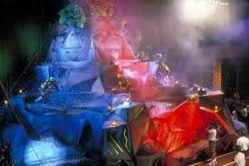
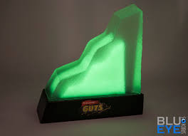

jQuery Frequently Asked Questions
How long have you been coding?
I've only seriously been coding for 8 months, however my first foray into coding was around 2007 when MySpace was at its peak. I not only designed my own page, but would also design friends' pages. MySpace's HTML code was simplified, but I was able to learn how to add background color, background music, and picture placement through MySpace.
Do you make mobile-responsive websites?
I do! I completed this project (The Pastry Dojo) for my Intermediate Web Design course during Spring 2017. It is fully viewable and operable on desktop, tablet, or mobile.
Do you also make logos?
I do indeed make logos as well. Here is my favorite example - a blues band wanted a logo that looked like it belonged on the nameplate of a classic hot rod. The first picture shows what the client was looking for - red lettering with yellow outline, the word 'band' made with musical notes, and the whole logo having a chrome shine to it. The second picture is what I created for the band, and they loved it.


What is your biggest childhood regret?
My biggest childhood regret is never having climbed the AggroCrag from the Nickelodeon game show, "Guts." I once promised to never ask for another Christmas present again in my life if Santa could get me a shot on that show. Look at that mountain. LOOK AT THAT TROPHY.

